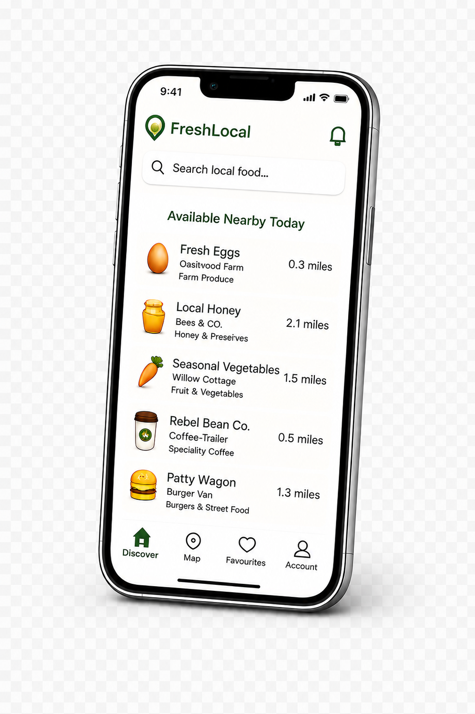

Fresh food produced by local people, just around the corner.
Join Early Access
Many independent producers rely on roadside signs, social media and word of mouth. FreshLocal makes it easier for customers to discover what's available nearby today.
Discover local produce, food vendors and independent sellers near you.
See locations, opening times and availability in one place.
Connect directly with local producers and traders.
Find local producers selling fresh eggs nearby.
Discover independent beekeepers and artisan producers.
Buy fresh seasonal produce grown locally.
Locate independent food vendors operating today.
Whether you're a grower, beekeeper, baker, florist or mobile caterer, FreshLocal helps local customers discover your products.
Make it easier for customers to find you.
Highlight what's available today and where to find it.
Connect directly with people looking for local food.
FreshLocal is currently being developed and will launch initially in Norfolk, connecting communities with local producers and independent food vendors.
Register Interest